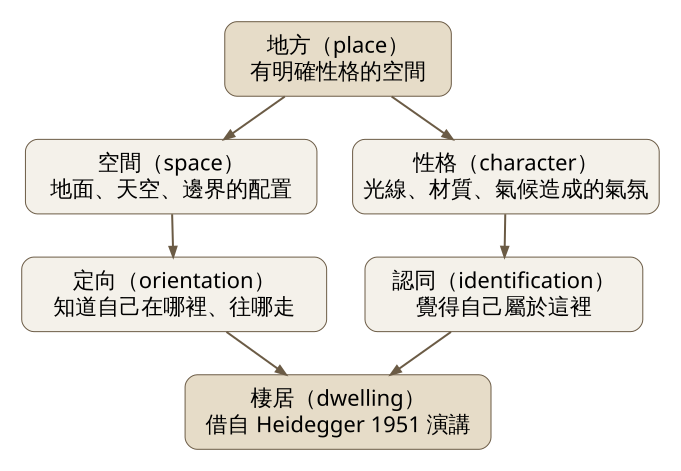
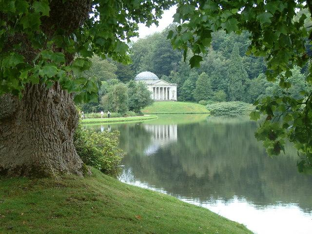
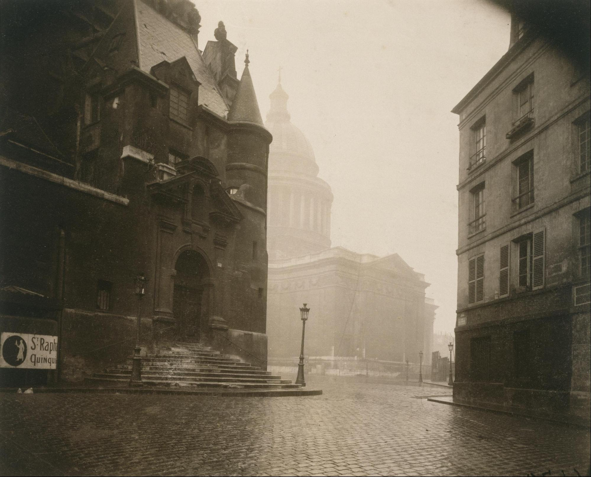

挪威建築理論家 Christian Norberg-Schulz 在《Genius Loci》（義大利文版 1979）主張：每個地方都有自己的「性格」，人要在一個地方既能辨認方向、又能認同它，才算真正住在那裡。設計者的工作，是先讀出這個性格，再用建築把它說得更清楚。（經典理論）
（史料）1731 年 12 月，英國詩人 Alexander Pope 出版了一封寫給 Burlington 伯爵的詩信，後來收入《Epistles to Several Persons》第四篇。那時英國的地主流行蓋莊園、造花園，Pope 在詩裡挖苦那些只會砸錢、堆砌排場的人。勸誡的核心是一句：「Consult the Genius of the Place」，凡事先去問問這個地方的守護神。
接下來幾行，Pope 讓這位「地方之神」開口指點：水該往上湧還是往下落，哪座小山想往天空長，哪個山谷可以挖成一圈像劇場的凹地，哪片樹林願意連在一起。換成白話，他要造園的人先看地形本來的脾氣，再決定動哪裡、留哪裡。
（依二手文獻：Hamid 等 2026）「genius loci」這個詞本來屬於羅馬宗教，指一個地方的守護靈。Pope 把宗教用語借來談造園品味。再過將近 250 年，Norberg-Schulz 又把它借進建築理論，這次他不談神靈，談的是人能不能在一個地方安頓下來。
（經典理論，依二手文獻）這本書先在 1979 年由義大利 Electa 出版，書名《Genius Loci. Paesaggio Ambiente Architettura》；1980 年紐約 Rizzoli 出英文版，副標題是「Towards a Phenomenology of Architecture」。我沒有讀到原書全文，以下整理依據兩篇學術文章：Akkelies van Nes 2008 年發表在期刊《Footprint》的論文，以及 Hamid、Hanks、Hamid 2026 年發表在《Journal of Architecture and Urbanism》的論文。
從 Heidegger 借來的問題。1951 年 8 月 5 日，哲學家 Martin Heidegger 在德國達姆施塔特一場以「Mensch und Raum」（人與空間）為題的座談會上演講〈Bauen Wohnen Denken〉（建築、棲居、思考）。他問：人怎樣才算「住」在世界上？van Nes 指出，Norberg-Schulz 後期的場所理論以這篇演講為基礎。（史料）
兩個條件：定向與認同。Norberg-Schulz 的回答是，人要能在一個地方「定向」，也要能「認同」它（見圖 1）。定向是知道自己在哪、往哪走，這部分他參考了 Kevin Lynch 1960 年《The Image of the City》對城市意象的研究。認同更深一層，是覺得這個地方跟自己有關係。van Nes 轉述他的話：今天很多地方提供的認同品質很差，很多人的心也沒有對周遭打開。

圖 1｜Norberg-Schulz 場所理論的基本架構：地方由「空間」與「性格」組成，分別對應人的「定向」與「認同」，兩者合起來才是「棲居」。來源：本課程依 Norberg-Schulz《Genius Loci》1979／1980（依 van Nes 2008、Hamid 等 2026 之整理）繪製。
空間與性格。他把一個地方拆成兩半。「空間」是結構：腳下的地面、頭上的天空或屋頂、四周圍起來的邊界。「性格」是氣氛：同樣大小的房間，石頭砌的和木頭搭的，給人的感覺完全不同。一個有明確性格的空間，他才叫它「地方」。
三種自然地景。書裡用三座城市示範：布拉格、喀土穆、羅馬，各代表一種地景（見圖 2）。北歐森林式的「浪漫型」，沙漠式的「宇宙型」，希臘與義大利那種輪廓清楚的「古典型」。van Nes 補充，大多數真實地景三種成分都有，只是哪一種比較強。她自己舉的例子是：挪威松林屬於浪漫型，荷蘭圩田那種一路延伸到地平線的平地則屬於宇宙型。
圖 2｜《Genius Loci》區分的三種自然地景與書中對應的城市。來源：本課程依 Norberg-Schulz《Genius Loci》1979／1980（依 van Nes 2008 與 Electa 出版社書目說明）繪製。
人造地方要做的四件事。Hamid 等人引用英文版第 58 頁指出，Norberg-Schulz 認為人造的地方由它「看見、補足、象徵、聚集」了什麼來決定。蓋房子這件事，在他的理論裡是在詮釋周遭的空間結構和性格。好的建築讓原本就在那裡的東西變得看得見。
（史料）英格蘭西南部威爾特郡的 Stourhead 花園，很適合拿來試這套理論。依英國 Parks & Gardens 資料庫，銀行家 Henry Hoare II 在 1741 年從義大利回來後開始規劃這片地景，把房子西邊山谷裡原有的兩個池塘改造成一座大湖。英國國民信託（National Trust）的資料記載，1753 至 1754 年湖邊蓋了仿羅馬萬神殿的 Pantheon，1762 年建帕拉底歐式橋，1765 年 Henry Flitcroft 設計的阿波羅神殿完工。整座花園由一條環湖步道串起來，從房子南邊草坪出發，繞著三角形的湖走一圈。

圖 3｜Stourhead 的 Pantheon 與湖。來源：Neil Kennedy 攝，2004 年 8 月 9 日，Geograph Britain and Ireland。授權：CC BY-SA 2.0，來源頁面
（本課程分析）用 Norberg-Schulz 的兩組詞來看（見圖 3）。
空間：山谷本身就是容器。Hoare 沒有把山谷填平，他往低處灌水。湖面讓山谷最低的地方變成一塊平整、反光的「地面」，四周坡地上的樹林成了「邊界」，天空倒映在水裡。走在環湖步道上，你隨時知道湖在哪一側，定向因此很容易：湖是中心，路繞著它走。
性格：水和樹的英格蘭氣氛。濕潤的空氣、深色的樹林、平靜的水面，這些是威爾特郡山谷原有的條件。湖把它們集中起來，讓遊客一眼就讀到。對照 Norberg-Schulz 說的「補足」：山谷原本就傾向積水，Hoare 讓這個傾向完成。
可以爭論的地方：搬來的神殿。Pantheon 與阿波羅神殿是羅馬的形式，屬於「古典型」地景的語言，被放進一個英格蘭山谷。這算是讀出場所精神，還是硬把義大利帶進來？一種讀法是，這些建築屬於「象徵」：Hoare 剛從義大利回來，國民信託說他想用一片古典地景表達自己對世界的信念。另一種讀法是，它們跟這個山谷本來的性格無關。這個問題沒有標準答案，正好可以拿來練習用理論說理由。
（史料）1968 年 9 月，紐約現代藝術博物館（MoMA）發布新聞稿，宣布從攝影師 Berenice Abbott 與畫商 Julien Levy 手上買下 Eugène Atget 的大批原作與底片。新聞稿寫道：Atget 1857 年生於波爾多附近的利布恩，當過水手、演員、畫家，1927 年去世前花了三十年拍巴黎和近郊。他最在意的是二十世紀初正在慢慢消失、改變的老巴黎。他把照片分成「車輛」「小行業」等系列，當作「給藝術家的參考資料」賣，買家包括建築師、畫家、雕塑家、裝飾師。

圖 4｜Eugène Atget，〈Rue de la Montagne Ste. Genevieve〉，1924 年，蛋白相紙，休士頓美術館（Museum of Fine Arts, Houston）藏。授權：Public domain（作者 1927 年去世），來源頁面
（本課程分析）Atget 拍的是街道、店面、門口、樹。他把一條街當成一個「地方」來記錄：路面怎麼鋪、兩側的牆怎麼圍、天空從哪裡露出來，這正好是 Norberg-Schulz 說的地面、邊界、天空（見圖 4）。MoMA 新聞稿說，他的題材常像某一類事物的「原型」。用今天的話來說，他拍下的是一條街的性格，讓沒去過巴黎的人也能認出那是巴黎。
誤解一：場所精神是玄學。這個詞來自羅馬宗教，聽起來很神秘。Norberg-Schulz 實際分析的卻是看得見的東西：地面、天空、邊界、材質、光線。你可以拿著這張清單去描述任何一個地方。（經典理論）
誤解二：一個地方的性格是固定的。Hamid、Hanks、Hamid 在 2026 年的論文中，明確挑戰 Norberg-Schulz 把場所精神看成「固定、不變」的傾向，主張用更動態的方式理解地方。舉個身邊的例子：老街改成觀光區，空間結構可能沒變，性格卻已經不同。（經典理論的後續評論，非實證研究）
誤解三：這套理論可以直接當成設計規範。van Nes 曾是 Norberg-Schulz 在奧斯陸建築學院的學生，她在 2008 年的論文裡指出，他把「應該怎樣」和「實際怎樣」混在一起談，對「空間」的定義也不夠清楚。挪威有人依他的理論寫過地方分析指南，但能不能用好，取決於使用者的建築背景和文化偏好。（經典理論的後續評論）
誤解四：Pope 和 Norberg-Schulz 說的是同一件事。Pope 談的是莊園主人的造園品味，對象是地形與水。Norberg-Schulz 談的是人怎樣安頓在世界上，對象包括城市與住宅。兩人用了同一個拉丁詞，問的問題不一樣。（史料與經典理論對照）
看（5 分鐘）：挑一個你每天經過的地方，例如巷口、捷運站出口、公司茶水間、學校走廊。站定，在紙上寫三行：腳下的「地面」是什麼材質、頭上是天空還是天花板、四周用什麼圍起來。再寫一行：這裡的光是從哪裡來的。
做（10 分鐘）：用手機在同一個地方拍三張照片。
回顧（5 分鐘）：
來源 | 類型 | 查核日期 |
Electa 出版社：Norberg-Schulz《Genius Loci. Paesaggio Ambiente Architettura》1979 書目頁 | 經典理論（書目） | 2026-11-27 |
Internet Archive：《Genius Loci: Towards a Phenomenology of Architecture》Rizzoli 1980 英文版書目（借閱限制，未讀全文） | 經典理論（書目） | 2026-11-27 |
學術論文（二手文獻） | 2026-11-27 | |
學術論文（二手文獻） | 2026-11-27 | |
Alexander Pope, An Epistle to the Right Honourable Richard Earl of Burlington, 1731（Wikisource 初版轉錄） | 史料 | 2026-11-27 |
史料 | 2026-11-27 | |
史料 | 2026-11-27 | |
史料 | 2026-11-27 | |
史料 | 2026-11-27 | |
圖 3 授權頁：Neil Kennedy, Stourhead, The Pantheon and the Lake（CC BY-SA 2.0） | 圖片授權 | 2026-11-27 |
圖 4 授權頁：Eugène Atget, Rue de la Montagne Ste. Genevieve, 1924（Public domain） | 圖片授權 | 2026-11-27 |
延伸閱讀：Martin Heidegger〈Building Dwelling Thinking〉，Albert Hofstadter 英譯，收於《Poetry, Language, Thought》；Kevin Lynch《The Image of the City》（1960）。